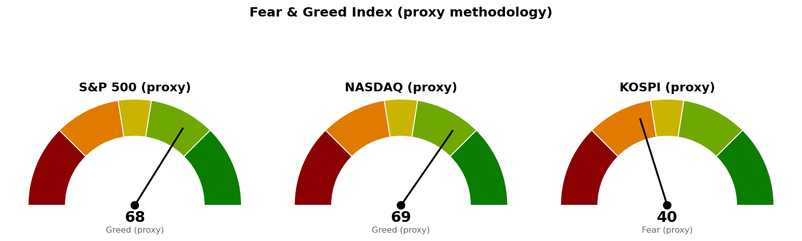

① 직전에 건 조건의 성적표 — 둘 다 아직 충족되지 않았습니다.
| 직전 리포트가 건 조건 | 판정 | 근거 |
|---|---|---|
| S&P 500 종가가 20일선 7,667.63 하회 시 관찰 단계 진입 | 미충족(진행 중) | 8/31 종가 7,686.14로 20일선 위 마감. 다만 장중 저가는 7,665.06으로 이 선 아래를 다녀갔습니다. |
| 코스피 50일선 6,939.16 종가 회복 전까지 신규 진입 관망 | 미충족 — 관망 유지 | 9/1 종가 6,835.80으로 50일선(현재 6,930.62) 아래에 그대로 있습니다. |
| 관심 방향으로 지목한 소재(XLB) | 작동하지 않았습니다 | 8/31 XLB는 -1.01%로 11개 섹터 중 8위였습니다. 하루치 결과이지만 지목이 맞지 않았다는 점을 그대로 적습니다. |
② 좌표의 이동 — 선은 거의 그대로인데 가격이 내려왔습니다.
가장 중요한 변화는 수치 자체가 아니라 S&P 500과 20일선 사이의 거리입니다. 8월 28일에는 63.36포인트(하루 평균 변동폭의 1.01배) 위에 있었는데, 8월 31일에는 16.75포인트(하루 평균 변동폭의 0.27배) 위로 좁혀졌습니다. 하루 평균적인 움직임의 3분의 1만 밀려도 관찰 단계에 들어간다는 뜻입니다.
| 기준선 | 직전(8/28) | 현재 | 이동 |
|---|---|---|---|
| S&P 500 20일선 | 7,667.63 | 7,669.39 | +1.76 |
| S&P 500 50일선 | 7,571.34 | 7,575.84 | +4.50 |
| 코스피 50일선 | 6,939.16 | 6,930.62 | -8.54 |
선이 거의 움직이지 않았으므로, 거리가 좁혀진 것은 전부 가격이 내려온 결과입니다(S&P 500 7,730.99 → 7,686.14).
③ 판단은 바뀌지 않았습니다. 직전 결론인 "신규 위험자산 확대 보류"를 그대로 유지합니다. 바뀐 것은 근거의 강도입니다 — 직전에는 섹터 배치만 금리 상승을 반영하고 지수와 변동성은 반영하지 않은 불일치로 적었는데, 이번에는 그 불일치가 지수 하락으로 한 걸음 좁혀졌습니다. 다만 투자심리와 변동성은 아직 따라오지 않았습니다.
미국은 8월 31일(월) 종가, 한국·일본은 9월 1일(화) 종가 기준입니다. 시점이 하루 다르므로 미국 지수에는 9월 1일 아시아 장중 흐름이 반영돼 있지 않습니다.
| 지수 | 종가 | 등락 | 20일선 | 50일선 | RSI |
|---|---|---|---|---|---|
| S&P 500 | 7,686.14 | -0.58% | 7,669.39 (위, +0.27배) | 7,575.84 (위) | 53.7 |
| 나스닥 | 26,370.89 | -0.64% | 26,221.50 (위, +0.45배) | 25,989.77 (위) | 53.6 |
| 코스피 | 6,835.80 | +0.23% | 6,744.63 (위) | 6,930.62 (아래) | 51.1 |
| 니케이 225 | 66,215.34 | -0.15% | 66,268.26 (아래) | 66,040.60 (위) | 49.6 |
"위, +0.27배"는 20일선 위에 하루 평균 변동폭(ATR — 하루에 평균적으로 움직이는 가격 폭)의 0.27배만큼 떨어져 있다는 뜻입니다.
읽는 법: 네 시장 모두 RSI(최근 상승폭과 하락폭의 비율을 0~100으로 나타낸 과열·침체 지표)가 50 부근으로 모였습니다. 직전 리포트에서 58.5였던 S&P 500이 53.7로, 56.8이던 나스닥이 53.6으로 내려왔습니다. 추세가 꺾였다기보다 방향성이 옅어진 상태입니다.
코스피는 9월 1일 +0.23%로 소폭 반등했지만, 직전 리포트 시점(8/28 종가 6,912.37) 대비로는 -1.11%입니다. 20일선 위·50일선 아래라는 위치는 직전과 같습니다.
| 섹터 (ETF) | 등락 |
|---|---|
| 에너지 (XLE) | +2.04% |
| 경기소비재 (XLY) | +0.61% |
| 커뮤니케이션 (XLC) | +0.04% |
| 필수소비재 (XLP) | -0.12% |
| 헬스케어 (XLV) | -0.36% |
| 금융 (XLF) | -0.67% |
| 리츠 (XLRE) | -0.83% |
| 소재 (XLB) | -1.01% |
| 기술 (XLK) | -1.12% |
| 산업재 (XLI) | -2.05% |
| 유틸리티 (XLU) | -2.20% |
섹터 상대강도는 미국 SPDR 섹터 ETF 기준이며, 한국·일본은 지수 흐름만 제공됩니다. 이번 조회에서 헬스케어(XLV)의 부가 정보 일부를 받아오지 못했으나 등락률 자체는 정상적으로 산출됐으므로 위 표에 그대로 실었습니다.
주목할 점은 세 가지입니다.
첫째, 에너지가 유일한 상승 섹터이고 2위 경기소비재(+0.61%)와의 차이가 1.4%포인트가 넘습니다. 하루 등락만으로 주도섹터를 단정할 수는 없습니다. 다만 직전 리포트에서도 에너지가 상대강도 1위였습니다 — 그때는 RSI 기준 순위였고 이번은 하루 등락 순위라 측정 방식이 다르지만, 서로 다른 두 잣대에서 같은 섹터가 1위로 나왔다는 점은 참고할 만합니다.
둘째, 금리에 민감한 쪽이 하위권에 몰렸습니다. 유틸리티 -2.20%, 산업재 -2.05%, 리츠 -0.83%입니다. 금리가 오르면 배당 매력이 상대적으로 줄고 차입 비용이 커지는 업종들입니다. 다만 금융(-0.67%)도 함께 내렸다는 점은 단순한 금리 상승 수혜 구도와 어긋나며, 이날 하락이 금리 요인 하나만으로 설명되지는 않는다는 뜻입니다.
셋째, 경기소비재(+0.61%)의 상승은 폭넓지 않습니다. 같은 날 뉴스에서 테슬라가 S&P 500 상승 상위 종목으로 꼽혔는데, 테슬라는 이 ETF의 주요 구성 종목입니다. 소비 전반이 좋아졌다기보다 특정 대형주에 쏠린 상승으로 보는 편이 안전합니다.
왜 중요한가: 오늘 섹터 배치가 정확히 이 시나리오의 모양입니다. 유틸리티·산업재·리츠가 가장 크게 빠지고 에너지가 홀로 올랐습니다. 그런데 지수와 변동성은 이를 반영하지 않았습니다 — S&P 500은 -0.58%에 그쳤고 VIX(향후 30일 변동성 기대치)는 14.9로 낮습니다. 섹터는 인상을 반영했고 지수는 반영하지 않은 상태이며, 이 간극이 좁혀지는 방향이 다음 큰 움직임을 결정합니다. 기사 제목 자체가 "모두가 확신하지는 않는다"이므로, 인상이 확정된 사안이 아니라 가격에 부분적으로만 반영된 위험으로 다뤄야 합니다.
왜 중요한가: 에너지 +2.04%의 출처가 유가라는 점을 확인해 줍니다. 더 중요한 것은 1번 뉴스와의 연결입니다. 유가 상승은 물가를 밀어올리는 요인이고, 전략비축유가 1982년 이후 최저 수준까지 줄었다는 것은 가격이 튈 때 정부가 방출로 눌러줄 여력이 그만큼 줄었다는 뜻입니다. 즉 에너지 섹터의 강세는 그 자체로 금리 인상 논거를 강화하는 방향이며, 두 뉴스는 같은 결론을 가리킵니다. 같은 기사가 "월간으로는 상승 마감"을 함께 전한다는 점도 기억할 대목입니다. 8월은 좋았고, 마지막 날에 성격이 바뀌었습니다.
왜 중요한가: 이 기사 자체가 결론은 아닙니다. 다만 하락 마감한 날에도 시장 해설의 무게중심이 "왜 이번에는 괜찮은가"에 실려 있다는 사실이 아래 투자심리 수치와 정확히 맞물립니다. 공포·탐욕 대체지표가 탐욕(67.7)이고 VIX가 14.9인 상태, 즉 낮은 변동성 전망이 이 낙관의 근거이자 동시에 취약점입니다. 1번의 금리 인상 위험이 현실화되면 가장 먼저 재조정되는 것이 이 낮은 변동성 가정입니다.
*수집한 헤드라인 250건 중 순위 상위 10건에서 위 3건을 골랐습니다. 이번 수집에서 CNBC Top News 피드는 응답하지 않아 그 매체 기사는 후보에 포함되지 않았습니다.*
아래 점수는 공포·탐욕 지수를 대체 방식으로 추정한 값(프록시)입니다. 원본 지수를 그대로 받아온 것이 아니라 모멘텀·RSI·변동성·안전자산 선호 네 항목을 합쳐 0~100으로 환산한 것이며, 0에 가까울수록 공포, 100에 가까울수록 탐욕입니다.

| 시장 | 점수 | 판정 | 직전(8/30) |
|---|---|---|---|
| S&P 500 | 67.7 | 탐욕 | 71.3 |
| 나스닥 | 69.2 | 탐욕 | 73.0 |
| 코스피 | 40.4 | 공포 | 51.3 |
미국 점수를 떠받치는 것은 여전히 변동성 항목 83.6입니다. VIX가 14.9로 낮아서 나온 값이며, 방향성을 재는 모멘텀(68.9)·RSI(53.7)보다 높습니다. 직전 회차와 성격이 같습니다 — 미국의 탐욕 신호는 상승 확신이 아니라 "큰 일은 없을 것"이라는 낮은 변동성 전망에서 나옵니다. 1번 뉴스의 금리 인상 위험과 정면으로 어긋나는 대목이며, 이번 주 이 둘 중 하나는 조정받게 됩니다.
향후 5일 이내로 확정된 발표 일정은 아래와 같습니다.
| 날짜 | 발표 | 왜 이번 주에 중요한가 |
|---|---|---|
| 2026-09-03(목) | 주간 신규 실업수당 청구건수 | 고용지표 중 가장 빨리 나오는 항목입니다. 9월 4일 결과의 방향을 미리 가늠하는 데 쓰입니다. |
| 2026-09-04(금) | 비농업 고용자수 · 실업률 (고용 상황 보고서) | 이번 주 일정 가운데 시장이 가장 크게 반응하는 발표입니다. 고용이 강하면 1번 뉴스의 금리 인상 논거가 굳어져 유틸리티·산업재·리츠의 약세가 이어지고, 약하면 인상 논거가 흔들리면서 오늘의 섹터 배치가 되돌려집니다. 어느 쪽이든 S&P 500이 20일선 7,669.39를 지키는지가 그날 확인 지점입니다. |
9월 FOMC 회의 날짜는 이번 조회 범위(5일 이내)에 들어오지 않아 표에 담기지 않았습니다. 날짜를 임의로 적지 않습니다.
행동 기준은 직전과 같이 신규 위험자산 확대 보류입니다. 보유분을 정리하라는 뜻이 아니라, 지수가 두 이동평균 위에 있는 지금이 비중을 늘릴 자리는 아니라는 의미입니다.
*본 자료는 투자자문이 아니라 참고 정보입니다. 미국 수치는 2026년 8월 31일 종가, 한국·일본 수치는 2026년 9월 1일 종가 기준입니다. 투자 판단과 그 결과에 대한 책임은 투자자 본인에게 있습니다.*